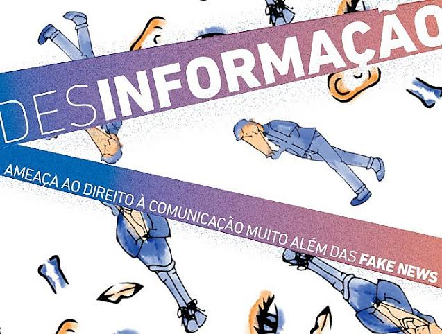
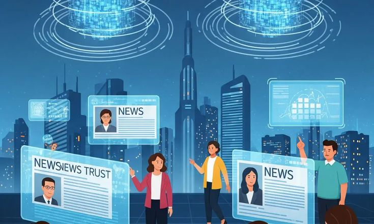

As origens da desinformação
As fake news existem há muito tempo, mesmo antes da internet. Desde a Antiguidade, líderes e governos utilizavam boatos e informações falsas para influenciar pessoas, desestabilizar adversários ou manipular a opinião pública. Como era difícil verificar fatos, essas histórias se espalhavam rapidamente.

Como o avanço da internet e das redes sociais acelerou o problema
Com a popularização da internet e das redes sociais, qualquer pessoa passou a ter o poder de criar e espalhar conteúdos em questão de segundos. Os algoritmos das plataformas tendem a priorizar publicações com alto engajamento, favorecendo sensacionalismo e boatos chocantes.
As fake news na história (e o papel da tecnologia)
Em momentos decisivos da história, como guerras e períodos eleitorais, a manipulação de fatos sempre foi uma arma estratégica. Com a chegada da inteligência artificial e os deepfakes, identificar o que é real ou manipulado tornou-se um desafio ainda maior para a sociedade moderna.

Curiosidades sobre as Fake News
- A desinformação costuma se espalhar 6x mais rápido do que as notícias verdadeiras.
- Notícias falsas tendem a despertar emoções fortes, como medo e indignação, o que aumenta seu compartilhamento.
- Redes sociais utilizam algoritmos que podem criar a sensação de "bolha de conteúdos populares", mesmo se eles forem falsos.
- A inteligência artificial pode hoje criar vozes e vídeos falsos incrivelmente realistas (deepfakes).
- O termo "Fake News" tornou-se popular mundialmente a partir de eleições recentes.
A resposta depende de...
Em um mundo cada vez mais conectado, a responsabilidade de combater as fake news não pertence apenas aos meios digitais ou aos órgãos de comunicação. Cada usuário tem um papel importante na construção de um ambiente online mais seguro: verificar informações, consultar fontes confiáveis e compartilhar conteúdo de forma consciente são atitudes essenciais para preservar a verdade e fortalecer uma sociedade mais informada e crítica.